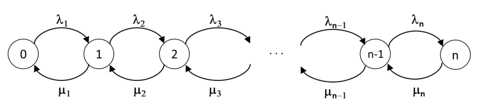

Procesos de nacimiento y muerte#
En este capítulo se introduce una clase de procesos estocásticos de tiempo continúo conocida como Procesos de nacimiento y muerte, muy comúnmente utilizados en el modelado de sistemas de cierta naturaleza. Por su estructura especial, es posible realizar el análisis de la distribución de probabilidades de estado estacionario de los procesos de nacimiento y muerte de forma muy sencilla. A continuación, se introducen primero los aspectos de diferentes tipos de sistemas que son susceptibles a ser modelados con procesos de nacimiento y muerte, después se proporciona una caracterización de esta clase de procesos, y finalmente se realiza el análisis en estado estacionario de la distribución de probabilidad correspondiente.
Introducción#
A menudo, el estudio de un sistema pasa a través del análisis de la dinámica de una población de entidades. Por ejemplo, cuando es de interés estudiar el número de clientes en un banco, la cantidad de individuos de una especie de animal en su hábitat, o el número de equipos en reparación en un sistema de producción, tenemos que caracterizar los eventos que resultan en el aumento de la población (p. ej., llegadas, reproducciones o fallas), así como aquellos que determinan una disminución de la población (p. ej. salidas, fallecimientos o reparaciones). A los eventos de la primera categoría se les refiere como nacimientos, y a aquellos de la segunda como muertes. Es así como un proceso estocástico que considere eventos de nacimiento y muerte se presta para modelar de manera adecuada la dinámica de una población de entidades.
Ejemplo 1
Consideremos la población de ballenas jorobadas del pacifico colombiano. Los individuos de esta especie son nómadas, y recorren largas distancias desdé los fríos océanos de la Antártida hacia las aguas al oeste de Colombia, donde se quedan por cierto periodo antes de empezar la vuelta al sur del planeta. Si quisiéramos definir un modelo que representara la dinámica de la población de ballenas en las aguas colombianas, sería pertinente considerar como nacimientos, es decir como eventos que incrementan el número de ballenas, las llegadas de individuos al pacifico colombiano, y como muertes las salidas de los individuos hacia la Antártida. Un posible modelo en tiempo continuo sería por ejemplo la Cadena de Markov en tiempo continuo \(\left\{ X(t),t \geq 0 \right\}\), donde la variable de estado es:
Podemos suponer que no existe un límite superior para el número de ballenas, por lo cual el espacio de estados del proceso estocástico será \(S_{X} = \{ 0,1,2,\ldots,\ \infty\}\). Supongamos ahora que las ballenas llegan de acuerdo con un proceso de Poisson de parámetro \(\lambda\), y se quedan en promedio un tiempo que sigue una variable aleatoria exponencial de tasa \(\mu\). Así, la tasa de transición \(q_{ij}\) entre el estado \(i\) y el estado \(j\), tal que \(i,j \in S_{X}\), \(i \neq j\) se define como:
Para este modelo, el diagrama de tasas transición está representado en la Figura 1:

Forma general de procesos de nacimiento y muerte#
El ejemplo que se presenta en la sección anterior es un caso particular de un proceso de nacimiento y muerte con espacio de estados infinito, y muestra algunas propiedades interesantes de esta clase de procesos. En particular, en la Figura 1 es posible observar la estructura particularmente simple de las transiciones, que pueden darse solo entre estados adyacentes, de tal forma que el diagrama de tasas de transición se puede ordenar como una cadena lineal de estados.
En general, un proceso de nacimiento y muerte es una Cadena de Markov en tiempo continuo, con espacio de estados \(S\mathbb{\subseteq N}\), tal que la tasa de transición entre estados es no nula solo para las parejas de estados \(i,j \in S\) tales que \(|i - j| = 1\). Usualmente, se nombran los estados de forma incremental a partir de cero, y se denota con \(\lambda_{i}\) la tasa de nacimiento del estado \(i - 1\) y con \(\mu_{i}\) la tasa de muerte del estado \(i\). Según esta convención, el diagrama de tasas transición adquiere una forma muy sencilla que se muestra en la Figura 2.

Nótese que no necesariamente tiene que ser \(\lambda_{i} > 0\), ni \(\mu_{i} > 0\) para todo \(i \in S\). La estructura que se observa en el diagrama de tasas de transición se refleja en una estructura igualmente simple en la matriz de tasas de transición \(\mathbb{Q}\) del proceso, como se muestra en la Figura 3, donde se omite el valor de los elementos diagonales para una visualización más clara. La matriz en la Figura 3 posee una estructura tridiagonal, es decir, presenta elementos no nulos solamente en la diagonal principal (elementos \(q_{ii}\)), en la primera diagonal superior (elementos \(q_{i,i + 1}\)) y en la primera diagonal inferior (elementos \(q_{i,i - 1}\)).
Figura 3: Estructura tridiagonal de la matriz Q de tasas de transición para procesos de nacimiento y muerte.
Nota
La estructura tridiagonal de la matriz, que permite reconocer que un proceso estocástico pertenece a la clase de los procesos de nacimiento y muerte, se observa con un ordenamiento adecuado de los estados. Una permutación de los estados (por ejemplo, el ordenamiento \(\{ 1,0,3,2,\ldots\}\) no permitiría apreciar la estructura regular del proceso).
Análisis de procesos de nacimiento y muerte ergódicos#
Para el análisis de un proceso de nacimiento y muerte se pueden utilizar todas las técnicas para Cadenas de Markov en tiempo de continuo. Si el proceso es ergódico, el análisis en el estado estacionario se vuelve particularmente sencillo, debido a la estructura regular del proceso.
Dado que un proceso de nacimiento y muerte es una Cadena de Markov en tiempo continuo, para que éste sea ergódico es necesario que satisfaga las siguientes condiciones (véase la nota de clase 6. Clasificación de estados):
Si el espacio de estado es finito, es necesario que sea irreducible.
Si el espacio de estados es infinito, es necesario que sea irreducible y que todos los estados sean recurrentes positivos.
En cuanto al punto 1, es fácil entender que, dada la particular estructura del proceso, si \(\lambda_{i} > 0\) y \(\mu_{i} > 0\) para todo \(i \in S\), la cadena es irreducible y entonces el proceso de nacimiento y muerte será ergódico.
En el caso al punto 2, además de requerirse \(\lambda_{i} > 0\) y \(\mu_{i} > 0\) para todo \(i \in S\) para asegurar la irreducibilidad, es necesario que las tasas sean tales que el estado de la cadena no crezca infinitamente. No es posible determinar una condición necesaria sobre las tasas, pero es fácil dar una suficiente que tiene un interés práctico. En particular, si existe un estado \(k\) tal que para cualquier otro estado \(j > k\) siempre se cumple que \(\lambda_{j} < \mu_{j}\) (es decir, existe un cierto estado \(k\) después del cual siempre es más probable que el número de entidades disminuya en lugar de que aumente), entonces la cadena será ergódica.
Si la cadena es ergódica, es posible realizar el análisis para el cálculo de la distribución estacionaria de probabilidad, y debido a la particular estructura del proceso, este cálculo se lleva a cabo analíticamente obteniendo expresiones explicitas para las probabilidades estacionarias en función de las tasas de transición del proceso.
Análisis de procesos de nacimiento y muerte ergódicos finitos#
Sea \(\left\{ X(t),t \geq 0 \right\}\) un proceso de nacimiento y muerte con espacio de estados finito \(S = \{ 0,1,2,\ldots,n\}\). El diagrama de tasas de transición del proceso será entonces el siguiente:

Para el análisis del estado estacionario, escribimos las ecuaciones de balance. La ecuación para el estado 0 nos proporciona la siguiente relación entre las probabilidades de estado estacionarias \(\pi_{0}\) y \(\pi_{1}\):
La ecuación de balance para el estado 1 es:
Para el estado 2:
Comparando las dos ecuaciones anteriores, es fácil darse cuenta que todas las ecuaciones desde el estado 1 hasta el estado n-1 tienen la misma forma, razón por la cual es posible escribir una ecuación general de balance para el estado \(i\), \(0 < i < n\), como sigue:
Finalmente, la ecuación de balance para el estado \(n\) es la siguiente:
Dada la forma de las ecuaciones, es posible encontrar su solución con un procedimiento iterativo. De la ecuación (1) para el estado 0, hallamos \(\pi_{1} = \pi_{0}\frac{\lambda_{1}}{\mu_{1}}\). Si reemplazamos esta expresión en la ecuación (2) del estado 1, obtenemos:
Repitiendo este proceso para la ecuación (3) se obtiene \(\pi_{3} = \pi_{0}\frac{\lambda_{1}\lambda_{2}\lambda_{3}}{\mu_{1}\mu_{2}\mu_{3}}\), y así iterativamente para todas las demás ecuaciones, de modo tal que todas las probabilidades estacionarias son directamente proporcionales a \(\pi_{0},\ \)según un factor que es una función de las tasas. Para simplificar la notación, definamos las constantes \(c_{j}\), \(0 < j \leq n\), como sigue:
Por ejemplo, para el estado \(j = 2\):
De modo que podemos escribir las probabilidades estacionarias de un estado \(j \in S\) como \(\pi_{j} = \pi_{0}c_{j}\), \(0 < j \leq n\). Ahora bien, para completar el cálculo, es necesario determinar el valor del \(\pi_{0}\), lo cual se realiza a través de la ecuación de normalización, como sigue:
La expresión (8) completa el cálculo de las probabilidades de estado estacionario, las cuales quedan determinadas para todo proceso de nacimiento muerte con espacio de estados finito. Al reemplazar los valores puntuales de las tasas para las probabilidades en las expresiones, se encuentran los valores de dichas probabilidades.
Análisis de procesos de nacimiento y muerte ergódicos con espacio de estados infinito#
Si el espacio de estados de un proceso de nacimiento y muerte ergódico es infinito, es válida la forma general de las ecuaciones del balance, proporcionada por la expresión (4). Es decir, para todo estado \(i \in S\), \(i > 0\), las probabilidades de estado estacionario satisfacen la igualdad:
Para el estado 0, la ecuación del balance sigue siendo igual a la expresión (1), y no habrá ecuaciones de otra forma, dado que no existe un estado límite superior, como en el caso finito. El análisis procede entonces de la misma manera, ya que es posible expresar cada probabilidad estacionaria \(\pi_{j}\) como \(\pi_{j} = \pi_{0}c_{j}\), siendo \(c_{j}\) definido como en la expresión (7).
En la normalización para el cálculo del \(\pi_{0}\) aparece ahora una suma infinita. En efecto, será:
Aquí es importante observar que la ergodicidad de la cadena garantiza la convergencia de la suma infinita en el denominador de la expresión (10) que define el valor de \(\pi_{0}\). Dado que supusimos que existe un estado \(k\) tal que \(\lambda_{j} < \mu_{j}\) por todo estado \(j > k\), escribimos la suma infinita como sigue:
En el lado derecho de la expresión (11), la primera suma es finita, por lo cual la suma total en el lado izquierdo será finita si y solo si la segunda suma en el lado derecho es finita. Ahora bien, podemos encontrar una cota superior al valor de \(c_{j}\) por todo \(j > k\), definiendo, de la siguiente forma:
donde \(\beta = \max_{j > k}{\{\frac{\lambda_{j}}{\mu_{j}}\}}\). De esta manera, será:
Por lo anterior, el segundo término en el lado derecho de la expresión (11) es finito. Nótese que para obtener la última expresión en la expresión (13) hemos utilizado la fórmula para la suma de una serie geométrica.
Ejemplo 2
Retomemos el ejemplo del proceso de nacimiento y muerte que modela la población de ballenas, y determinemos la solución estacionaria para las probabilidades de estado.
Observamos que el proceso es ergódico porque, para todo estado \(i\), \(\lambda_{i} = \lambda > 0\) y \(\mu_{i} = i \cdot \mu > 0\), por lo cual la irreducibilidad de la cadena está asegurada. Además, la tasa con la cual las ballenas abandonan la población es proporcional al número de ballenas, mientras que la tasa de llegada es constante. Por ende, con seguridad existe un estado del proceso después del cual la tasa de muerte se vuelve mayor que la tasa de nacimiento (será el primer estado \(k\) para el cual \(\lambda < k \cdot \mu\)).
Con los resultados de la sección anterior, se pueden calcular analíticamente las probabilidades en estado estacionario, \(\pi_{j}\) para todo \(j \in S\), como \(\pi_{j} = \pi_{0}c_{j}\), siendo el factor \(c_{j}\):
El valor del \(\pi_{0}\) será:
Uniendo los resultados en las expresiones (14) y (15), se obtiene que la distribución estacionaria de la probabilidad de estado para el modelo de la población de ballenas es una \(Poisson(\lambda/\mu).\)